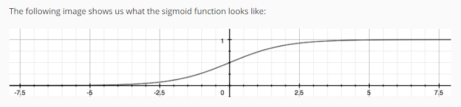
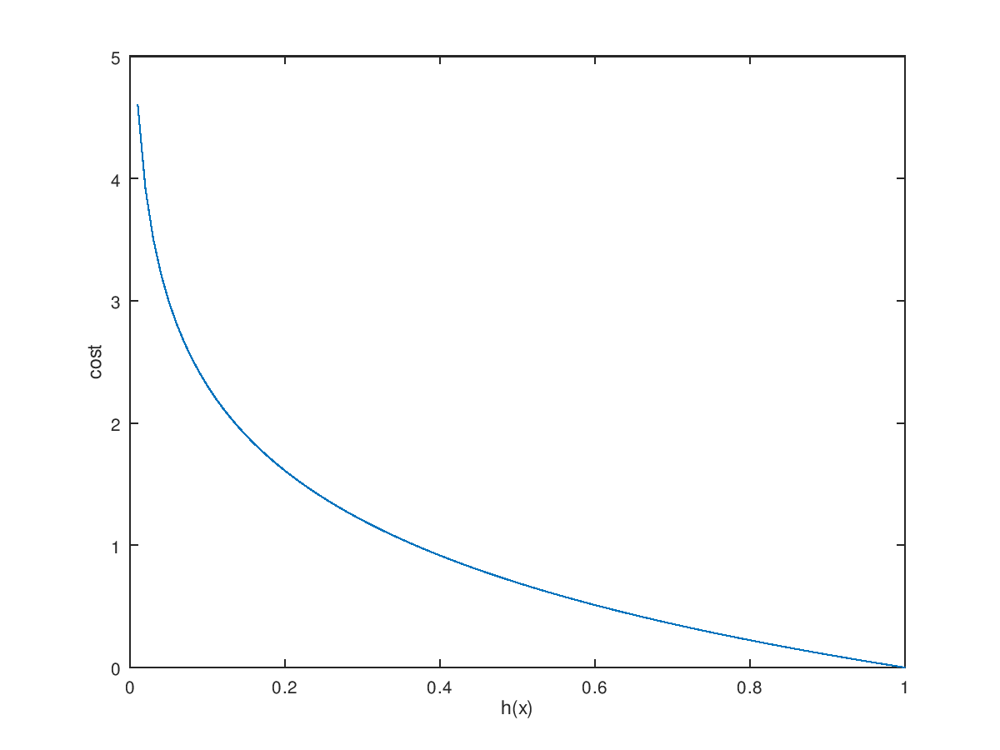
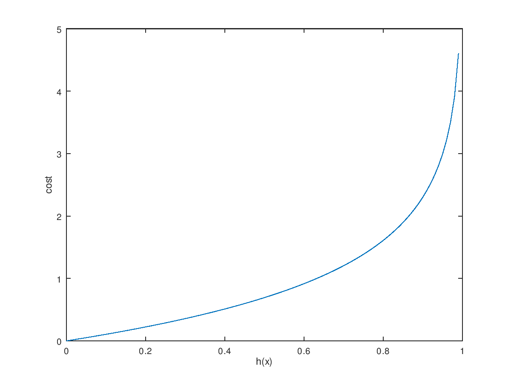
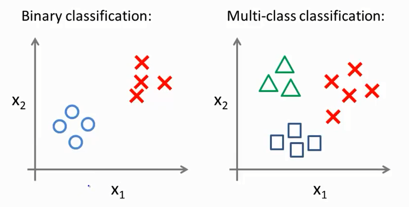

Coursera机器学习笔记03
逻辑回归——Logistic Regression
有了线性回归的基础，下面来学习逻辑回归。逻辑回归对应的问题是监督学习中的分类问题。分类问题的基础是二元分类，即$y\in\{0,1\}$，$y=0$的类被称为负类(Negative Class)，$y=1$的类被称为正类(Positive Class)。
有了前面的基础，我们可以尝试将线性回归应用于分类问题，通过模型的建立，我们可以得到一个假设方程$h(x)$，但是之中方法并不总是有效的。因为我们并不是希望用一个方程来拟合所有的数据，我们希望做到的任务是分类。
S型函数
由于输出$y$只有0，1两种取值，因此我们希望假设函数$h(x)$的范围也介于0和1之间。因此我们将假设函数构造成$h_\theta (x)=g(\theta^Tx)$，其中$g(z)=\frac{1}{1+e^{-z}}$，$g(z)$被称为S型函数(sigmoid function or logistic function)。其图像如下所示：

从图像可以轻易地得出函数的性质：
- $g(0)=0.5$
- $x\to+\infty,g(z)\to1$
- $x\to-\infty,g(z)\to0$
通过这样的构造，无论$\theta^Tx$为多大，都可以保证$0\le h(x)\le1$。
$h(x)$的意义
在逻辑回归问题中，$h(x)$的大小可以用来预测对应$x$输入情况下，$y=1$的概率，即$h_\theta (x)=P(y=1|x;\theta)$。
举例说明一下这个问题，假设已经建立好了通过肿瘤的大小来判断肿瘤是良性还是恶性的模型，将某一数据x输入，得到$h(x)=0.7$，那么在该模型的判断下，此人的肿瘤是恶性的概率为0.7，为良性的概率为0.3。公式如下：
决策边界——Decision Boundary
所谓决策边界就是指将样本正确分类的边界，由S型函数的特点，我们可以轻易的确定分类的阈值为0.5，因此可以有得出：
当$z\ge0$时，$g(z)\ge0.5\Rightarrow y=1$
当$z\le0$时，$g(z)\le0.5\Rightarrow y=0$
即：
$\theta^Tx\ge0\Rightarrow y=1$
$\theta^Tx\le0\Rightarrow y=0$
因此可以得到，决策边界的方程就是$\theta^Tx=0$。
在这里有一点要强调，决策边界是由$h(x)$的属性，与其参数$\theta$有关，决策边界并不是训练集的属性。
下面举一个简单的例子，假设我们得到的模型为$\theta^Tx=\theta_0+\theta_1x_1^2+\theta_2x_2^2$，其中$\theta=\left[ \begin{smallmatrix} -2\\1\\1\end{smallmatrix}\right]$，当$\theta^Tx=0$时，可以得到$x_1^2+x_2^2=2$，因此在这个模型中，决策边界是一个圆。
代价函数
首先，回顾一下线性回归的代价函数，
在这里，我们定义，
因此，我们可以将代价函数改写为：
这就是一般形式的代价函数，而对于逻辑回归问题来说，如果仍然使用线性回归的$cost$函数，将会导致代价函数有太多的局部最小值，也就是说代价函数将不是一个凹函数，这样就很难通过梯度下降算法找到代价函数的最小值，因此必须将$cost$函数的形式做如下修改：
下面是这两个函数的图像：


$cost$函数是一个分段函数，可以通过数学变换用一个表达式表示，下面是简化后的$cost$函数：
至此，我们便得到了逻辑回归问题的代价函数的表达式：
梯度下降算法
梯度下降算法的一般表达式为：
经过计算可以得到：
我们惊奇的发现，这与线性回归的梯度下降算法表达式一摸一样，但是需要注意的是，逻辑回归模型和线性回归模型的假设函数$h(x)$是不同的。
对于逻辑回归的梯度下降算法，我们仍然可以通过特征放缩和均值归一的方法来提高算法的运行效率。
高级优化算法
对于线性回归和逻辑回归问题来说，都可以使用梯度下降算法来拟合出合适的假设函数，但其实我们有很多更加强大的算法，比如：共轭梯度法(Conjugate gradient)，BFGS算法，L-BFGS算法等等，这些算法的细节是非常专业的计算数学的知识，在此不做过多的介绍，而且我们使用的编程语言都为我们准备好了各种各样的库函数可以让我们使用这些算法。
相比于梯度下降算法，这些高级优化算法有如下优势：
- 不需要人为地去选择学习率($\alpha$)，这些算法可以自动选择合适地学习率，甚至动态改变学习率地大小
- 高级优化算法比梯度下降法更快
而高级优化算法的缺点就是其算法细节过于复杂，实现起来十分的困难，幸好我们有已经封装好的库函数可以使用，$fminunc()$函数就是其中之一。
使用$fminunc()$函数首先需要我们自己定义一个函数来给出代价函数和代价函数的偏导数，伪代如下：1
2
3
4function [jVal, gradient] = costFunction(theta)
jVal = [...code to compute J(theta)...];
gradient = [...code to compute derivative of J(theta)...];
end
之后可以通过调用$fminunc()$函数和$optimset()$函数来计算参数$\theta$，代码如下：1
2
3options = optimset('GradObj', 'on', 'MaxIter', 100);
initialTheta = zeros(2,1);
[optTheta, functionVal, exitFlag] = fminunc(@costFunction, initialTheta, options);
多元分类问题
现实生活中，多元分类问题不胜枚举，比如要预测天气，可能的结果有晴天，多云，雨，雪等等。下图可以形象地表示二元分类和多元分类：

针对多元分类地问题可以采用一对多(One-vs-all/One-vs-rest)的方法来处理，即将多元分类问题转化为n个二元分类问题，分别作出n个分类器的模型。
比如，面对上图所示的三元分类问题，可以分别对三角形，方形和圆形构造三个分类器，分别得到$h_\theta^{(1)}(x)$，$h_\theta^{(2)}(x)$和$h_\theta^{(3)}(x)$。在进行预测的时候，分别计算三个假设函数的值，这三个值就是该输入对应三个分类的概率，而三个值中的最大值就是预测该输入的分类。
正则化——Regularization
过拟合(over fitting)和欠拟合(under fitting)
在模型建立的过程中，可能会出现过拟合和欠拟合的情况。过拟合是指，假设函数为了尽可能的满足全部的训练样本，尽可能的使代价函数趋近于0，而缺乏了泛化(generalize)能力。泛化能力是指模型预测其他不属于训练集的数据的能力。下面的三幅图中最左侧的图像是欠拟合的情况，最右侧的图像是过拟合的情况，中间的图像则是拟合的比较好的情况。

针对欠拟合的问题，主要有两种情况，一是模型选择过于简单，比如应该选择二次函数模型，却选用了一次函数模型，二是使用的特征量太少。
而过拟合问题正好相反，是由于模型过于复杂或者使用了太多的特征量导致的。
解决过拟合问题有两种办法：
- 减少特征量的数量
- 正则化
对于第一种方法，我们可以通过人工的手段减少多余特征量的数量，另外还可以使用模型选择算法来自动减少特征量的数量。
但是很多时候，尽管有的特征量显得不那么重要，但是其中蕴含的信息还是能够对假设方程产生一定的影响，我们在希望保留全部特征量的前提下，为了解决过拟合的问题，就可以使用第二种办法——正则化。
正则化的主要思想是通过减小假设方程中参数$\theta$的大小，让假设方程中既能保持有全部特征量的信息，又能避免过拟合的发生。
正则化的思想
假设某一模型的假设函数为：
我们希望对训练集的拟合更加准确，因此加入了三阶项和四阶项，但是又不希望三阶项和四阶项对假设函数造成太大的影响，因此可以对代价函数进行如下的调整：
新加入的$1000\theta_3^2$和$1000\theta_4^2$称为$\theta_3$和$\theta_4$的惩罚项，这样在进行梯度下降或者其他算法时，为了保证代价函数的值最小，而且由于系数1000的存在$\theta_3$和$\theta_4$都将趋近于0，这样$\theta_3$和$\theta_4$对整体的代价函数的影响不大，这就是正则化的思想。
代价方程的正则化
正则化后的代价方程如下：
因此对于线性回归，其正则化的代价方程为：
对于逻辑回归的正则化代价方程为：
$\lambda$称为正则化参数，其作用是平衡，使其可以在避免过拟合的情况下，很好的拟合出假设函数。
如果$\lambda$过大，那么代价函数的作用就会更加倾向于避免过拟合的任务，从而参数$\theta$变得过小，甚至趋近于0。这样的话，又产生了欠拟合的情况，因此选择合适的$\lambda$十分重要。
这里有一点值得注意，正则化项是从$\theta_1$开始的而非$\theta_0$，这是由于我们不希望对$\theta_0$进行惩罚，尽管加入$\theta_0$对假设函数建立的结果并没有太大的影响。
梯度下降算法的正则化
尽管假设方程$h(x)$不同，但是对于线性回归和逻辑回归，他们的梯度下降算法的表达式都是相同的，因此经过正则化的梯度下降也可以用同样的表达式进行表示：
其中，由于$\theta_0$不需要进行正则化的处理，所以其表达式与之前的相同，而$\theta_1\to\theta_n$都需要进行正则化的处理，因此他们的梯度下降算法表达式与之前的略有不同，而经过一定的数学变化，可以得到如下的表达式：
在这个表达式中，$1-\alpha\frac{1}{m}<1$，因此可以看出实际上正则化的过程就是在梯度下降的基础上，在每一次迭代的过程中都逐渐减小$\theta$的值，从而使参数的量级减小，达到正则化的目的。
正规方程的正则化
求解线性回归问题的另一种方法是使用正规方程，在正规方程中同样可以使用使用正则化，下面是正则化的正规方程的表达式：
其中，
值得注意的是在进行了正则化之后，$(X^TX+\lambda L)$一定为可逆矩阵，因此可以放心大胆的使用该正规方程。
高级优化算法的正则化
前面提到的高级优化算法也可以正则化，只需要根据正则化后的代价函数和梯度下降算法进行改进$costFunction()$函数即可。